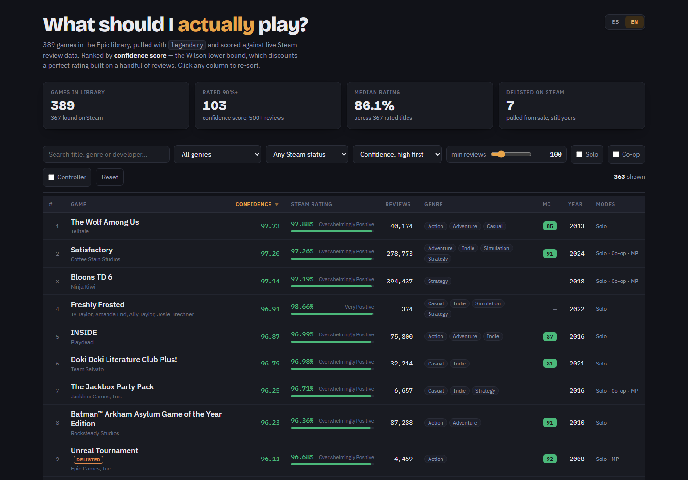

Este programa descarga el listado de tu propia biblioteca de Epic Games, lo cruza con las reseñas de Steam y arma un informe de una sola página, ordenado de mejor a peor según la confianza de esas reseñas. Todo corre en tu computadora — no hay servidor, no hay cuenta que crear, no hay nada ligado al autor original.
En Windows: descomprimí y hacé doble clic en run.bat. macOS y Linux usan tres comandos de terminal.
100% local
tu biblioteca nunca sale de tu PC
1 archivo
informe HTML autocontenido, sin conexión
ES / EN
se abre en el idioma de tu navegador
0 cuentas
nada se crea ni se registra en ningún servicio
01
Un login normal en epicgames.com, de solo lectura: el programa solo pide el listado de tu biblioteca, nunca tu contraseña. No usa ni depende de la cuenta del autor.
02
Cada título busca su página de Steam y trae reseñas, etiquetas y fecha de lanzamiento. Ordenar por porcentaje puro favorece juegos con pocas reseñas — por eso el orden usa un cálculo estadístico (límite de Wilson) que pondera reseñas confiables por sobre casos con muy pocos votos.
03
Una página que se abre sola al terminar: buscá, filtrá por género, estado en Steam o soporte de mando/cooperativo, y ordená por cualquier columna. Podés volver a correrlo cuando quieras — las siguientes veces tardan segundos.
Reseñas, etiquetas, año de lanzamiento y estado en Steam por juego. Los que fueron retirados de la tienda o nunca estuvieron ahí también aparecen — se buscan aparte en PCGamingWiki, así que nada queda afuera solo por no estar a la venta hoy.

run.batRequiere Python 3.8+ (se instala solo en Windows si falta) y unos minutos la primera vez — Steam limita las consultas, así que las siguientes corridas leen de una caché local y tardan segundos.